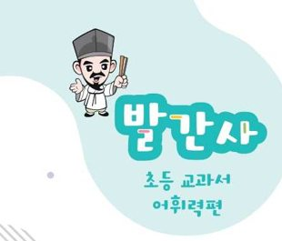
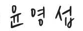

문해력의 시작, 어휘라는 뿌리에서 시작됩니다
다산 정약용 선생님이 강진에 머무르는 18년 동안 500여 권의 책을 저술하셨습니다. 그 중 ‘아학편’은 어린 아이들이 글을 쉽게 배우고 익힐 수 있도록 만든 책입니다. 다산 선생께서 우리 지역 아이들의 교육에 힘쓰시면서 아이들 교육의 첫 출발이 되는 어휘력을 키우고자 하셨음일테지요.
우리는 흔히 ‘글을 읽는 것’과 ‘글을 이해하는 것’을 혼동하곤 합니다. 하지만 글 속의 낱말 뜻을 정확히 모른 채 글자만 읽어 내려가는 것은 마치 지도 없이 낯선 길을 걷는 것과 같습니다. 어휘력은 단순히 단어를 외우는 능력이 아니라, 문장을 읽어내는 독해력의 핵심이며, 나아가 세상을 이해하는 문해력의 든든한 기초가 됩니다.
『청자골 아학편-교과서 어휘력편』은 이러한 다산선생의 뜻과 맥을 같이합니다. 우리 초등학생들이 학교에 처음 입학해 만나게 되는 교과서에는 우리가 앞으로 공부해야 할 핵심 낱말뿐만 아니라 그 해 학년에서 익히고 쓰기에 좋은 수준의 낱말들이 담겨있습니다. 그래서 이번 교재에는 초등학교 학년별 국어, 수학, 사회, 과학 교과서를 꼼꼼히 분석하여 학년별로 반드시 알아야 할 필수 어휘들을 엄선하였습니다. 특히 상당 부분을 차지하는 한자의 훈과 음을 함께 풀이하여, 아이들이 단어의 속뜻을 스스로 유추하고 문장 속에서 어떻게 쓰이는지 자연스럽게 체득할 수 있도록 구성하였습니다. 본 교재는 선생님들께는 수업의 길잡이로 수업 전후 주요 개념을 익히는 학습 자료로 활용할 수 있습니다. 학생들에게는 학교 과제나 자기주도 학습의 도구가 되거나 자투리 시간이나 쉬는 시간에 친구들과 함께 읽고 이야기를 나누며 즐거운 ‘어휘 놀이’의 소재가 될 것입니다.
글을 읽고 그 속에 담긴 의미를 온전히 자신의 것으로 만드는 힘은 미래 사회를 살아갈 우리 아이들에게 가장 강력한 무기가 될 것입니다. 이 작은 어휘집이 마중물이 되어, 우리 강진의 학생들이 막힘없이 책을 읽고, 깊이 있게 생각하며, 자신의 꿈을 당당하게 표현하는 인재로 성장하기를 진심으로 기원합니다.
이 교재가 완성되기까지 현장의 목소리를 담아주시고 애써주신 모든 관계자 여러분의 노고에 깊은 감사를 드립니다.

①학교 · 학급
학생용 표지에 표시되는 정보예요.
②과목 · 출판사
과목마다 출판사를 따로 고를 수 있어요. 국어는 국정 교과서라 '국정'만 있어요.
③학급 링크 · QR 만들기
- 위 버튼을 누르면 이 학급만의 링크와 QR이 만들어져요. 알림장·학급 메신저에 링크를 붙여 넣거나, QR을 화면·인쇄물로 보여 주세요.
- 학생은 링크를 한 번만 열고 홈 화면에 추가해요. (아이폰·아이패드: Safari 공유 → 홈 화면에 추가 / 안드로이드: Chrome 메뉴 → 홈 화면에 추가)
- 그다음부터는 홈 화면 아이콘으로 열면 인터넷이 없어도 표지 → 카드 학습 → 어휘력 퀴즈를 쓸 수 있어요. 학습 기록은 각자 기기에만 저장돼요.
학생용 앱 주소 바꾸기 (고급)
보통은 손댈 필요가 없어요. 학생용 앱을 다른 주소에 올렸을 때만 바꿔 주세요.